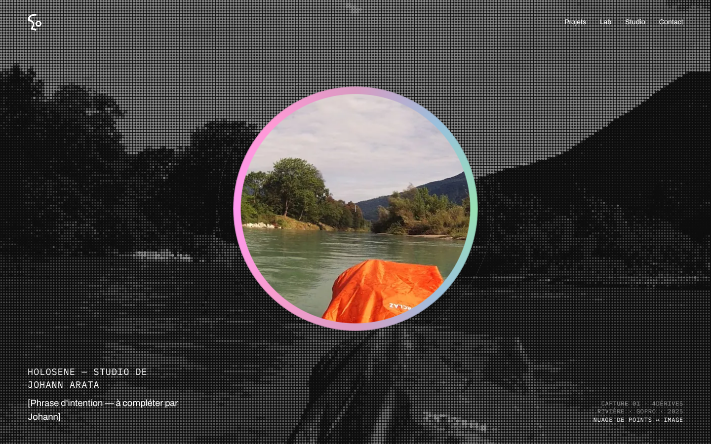
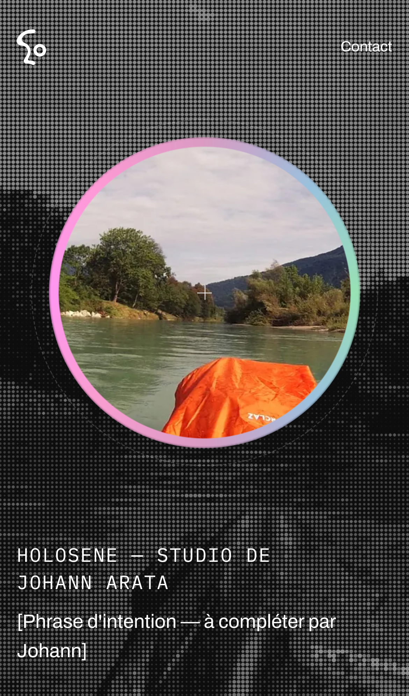
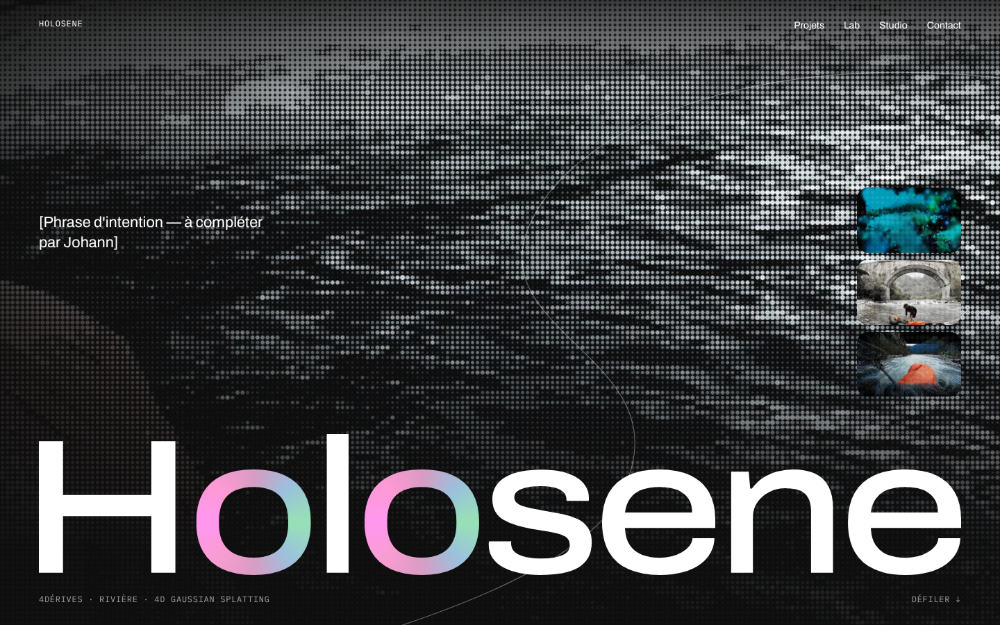
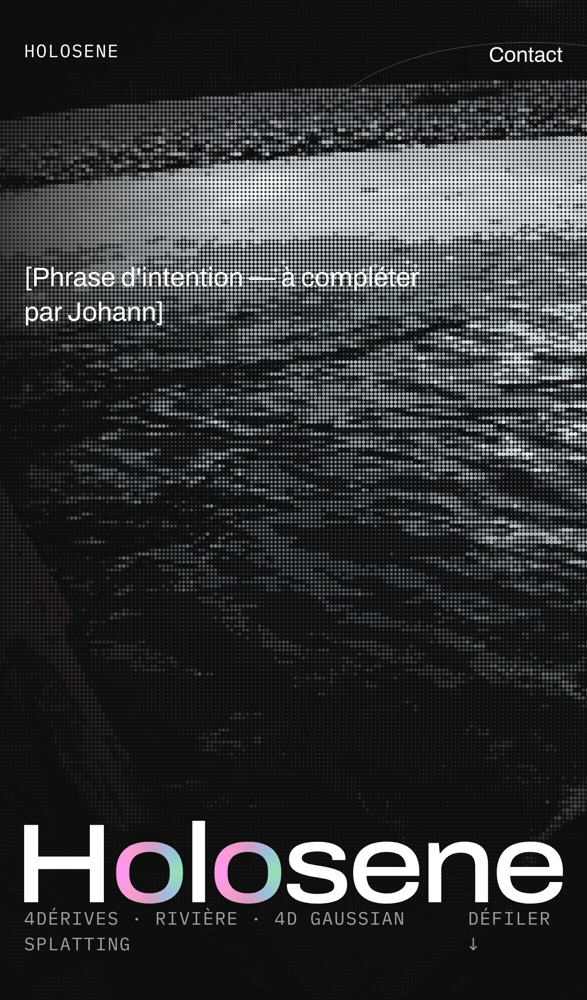
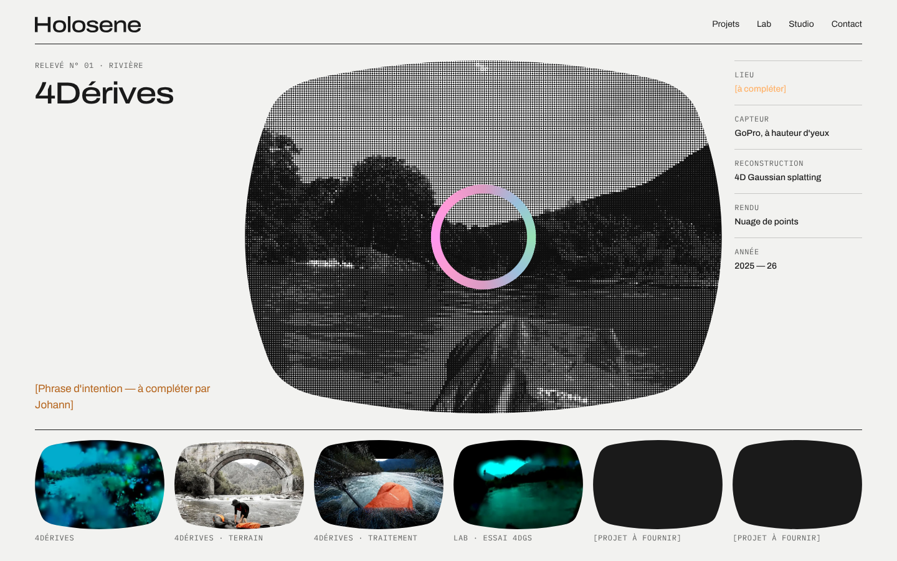
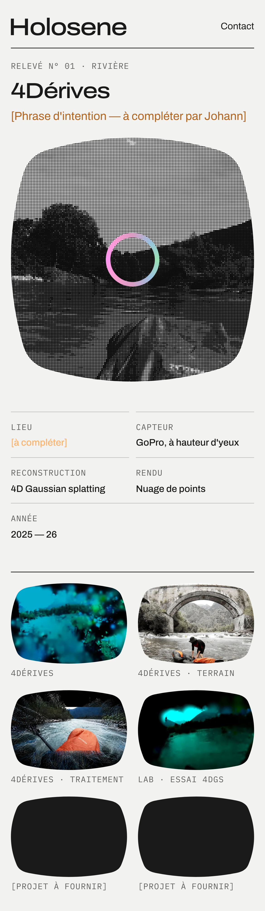

Holosene · étape 3 · directions artistiques
Toutes reposent sur la même identité (monogramme, logotype, irisé rare, squircle, Archivo). Elles diffèrent par la façon de montrer le réel. Images : uniquement les captations de Johann (4Dérives : GoPro, terrain, essais en 4D Gaussian splatting). Textes entre crochets : à fournir par Johann.
Direction A
Le « o » devient un point de capture : au centre de l'écran, une lentille cerclée d'irisé laisse voir l'image réelle ; autour, la même scène en nuage de points. Regarder, c'est passer de la reconstruction au réel.


Direction B
Le tracé du « S » comme un courant : l'image réelle en points occupe tout l'écran, le logotype géant ancre le bas, une ligne fluide traverse la page et guide la lecture. Plus cinématographique, plus proche du film.


Direction C
Le studio comme laboratoire de terrain : une grille stricte, une fenêtre en squircle sur la captation, et à côté la fiche technique (lieu, capteur, reconstruction, rendu). Version claire, sobre, documentaire — proche de la posture de recherche.

